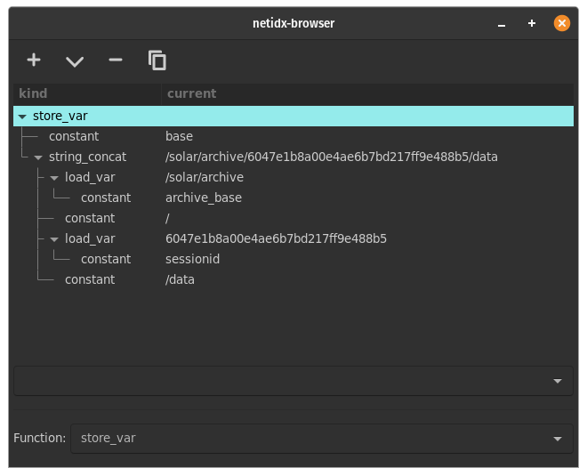

Quick Start for Linux
Install rust via rustup if
you haven't already. Ensure ~/.cargo/bin is in your PATH.
cargo install netidx-tools
This will build and install the netidx command, which contains all
the built in command line tools necessary to run to the resolver
server, as well as the publisher/subscriber command line tools
You will need some build dependencies,
- libclang, necessary for bindgen, on debian/ubuntu
sudo apt install libclang-dev - gssapi, necessary for kerberos support, on debian/ubuntu
sudo apt install libkrb5-dev
{
"parent": null,
"children": [],
"pid_file": "",
"addrs": ["127.0.0.1:4564"],
"max_connections": 512,
"hello_timeout": 10,
"reader_ttl": 60,
"writer_ttl": 120,
"auth": "Anonymous"
}
Install the above config in ~/.config/netidx.json. This config will
only allow communication on your local machine. Make sure port 4564 is
free, or change it to a free port of your choosing.
run netidx resolver-server. This command will return immediatly, and
the resolver server will daemonize. Check that it's running using ps auxwww | grep netidx.
To test the configuration run,
netidx stress publisher --bind 127.0.0.1/0 --delay 1000 1000 10
This will publish 10,000 items following the pattern /bench/$r/$c
where $r is a row number and $c is a column
number. e.g. /bench/100/8 corresponds to row 100 column 8. The
browser will draw this as a table with 1000 rows and 10 columns,
however for this test we will use the command line subscriber to look
at one cell in the table.
netidx subscriber /bench/0/0
should print out one line like this every second
/bench/0/0|v64|1
The final number should increment, and if that works then netidx is
set up on your local machine. If it didn't work, try setting the
environment variable RUST_LOG=debug and running the stress publisher
and the subscriber again.
Optional Netidx Browser
The browser is an optional gui browser for the netidx tree, you need gtk development files installed to build it, on debian/ubuntu add those with
sudo apt install libgtk-3-dev
and then
cargo install netidx-browser
Overview of Netidx
Netidx is a library, protocol, and server that facilitates publishing the value of a variable in one program and consuming it in another program, possibly on another computer. There are a lot of details, but making that transaction as easy as possible, while still being secure and performant is the essential goal.
The Namespace
Netidx values are published to a hierarchical tuple space. The structure of the names look just like a filename, e.g.
/apps/solar/stats/battery_sense_voltage
Is an example name. Unlike a file name, a netidx name may point to a value, and also have children. So keeping the file analogy, it can be both a file and a directory. For example we might have,
/apps/solar/stats/battery_sense_voltage/millivolts
Where the .../battery_sense_voltage points to the number in volts,
and it's 'millivolts' child gives the same number in millivolts.
Sometimes a name like battery_sense_voltage is published deep in the
hierarchy and it's parents are just structure. Unlike the file system
the resolver server will create and delete those structural containers
automatically, there is no need to manually manage them.
The term 'points to' is literal. In netidx the actual data is completely separate from the names. The names are stored in the resolver server cluster. Each name points to the ip address and port of the publisher that actually has the data.
When a client wants to subscribe to the value pointed to by a name, it queries the resolver server cluster, and is given the addresses of all the publishers that publish said data point. It then randomly permutes that list, and tries to subscribe to each address. If one of them succeeds, then the subscription succeeds, if they all fail then it doesn't. All the actual data flows from publishers to subscribers directly without ever going through any kind of centralized infrastructure.
What's a Value
Values are primitives, e.g. various kinds of number, strings, durations, timestamps, and byte arrays. Values don't have any inherent structure, but of course you can use byte arrays to publish anything that can be serialized, and since byte arrays are zero copy that is even quite efficient.
Published values have some other properties as well,
- Every non structural name points to a value
- Every new subscription immediately delivers it's most recent value
- When a value is updated, every subscriber receives the new value
- Updates arrive reliably and in the order the publisher made them (like a TCP stream)
Scale
Netidx is meant to be a building block, and as such a lot of thought has gone into scale. There are multiple different parts of the system that need to scale. The resolver servers, being the only centralized piece of infrastructure, are perhaps the most important piece, though the publisher and subscriber also need to be fast or it won't be worth using.
Resolver Server
The resolver servers implement two strategies to achieve scale. Replication is the first, one can deploy multiple replicas to multiple machines in order to protect against a single machine outage, and also increase throughput. In netidx, the publisher itself is the primary, and as such it is responsible for replicating the names it publishes out to all the configured resolver servers. This makes the system very resilient, as even if the entire resolver server cluster goes down, the data isn't lost if the publishers are still alive. They will keep trying to republish their data with linear backoff until they are killed.
Hierarchy is the second scaling strategy. When a system grows too big to fit in even a large cluster of servers, then busy parts of the namespace can be delegated to 'child' server clusters. Readers familiar with DNS will recognize the basic strategy, though the details not exactly the same. The administration overhead is similarly hierarchical, since each cluster config file must only know about it's immediate superior and immediate children. It's entirely possible for a large organization to run a central 'root' resolver server cluster without needing to micro manage the delegation going on in various organizational units.
I've focused on designing a scaleable architecture, but I should also mention that the resolver server itself is pretty fast, and uses a number of strategies to minimize memory use. It's entirely possible to put 100 million names in a single instance on a single machine with 32 - 64 gig of ram. You get roughly 1 million names per 500 MB of ram, assuming your paths aren't crazy long. I have not explicitly tested the resolve throughput, but given that it uses the same infrastructure as the publisher/subscriber (which I have tested), and what it's doing, I would not be at all surprised if you could support millions of resolutions per second per core (yes it will use all your cores).
Publisher/Subscriber
On the wire, the netidx protocol is almost exactly the same as protobuf. In protobuf, each record is extensible and rather cleverly encoded. Each field in the record has a LEB128 Id, followed by a data value.
In netidx, the subscriber sends the name it wants to one of the publishers specified by the resolver server cluster. The publisher looks up that value, and responds with the id it will use in subsequent messages, along with the current value. From then on updates to that value transmit only the id, which is LEB128 encoded, and the updated value. So on the wire, in terms of overhead, it looks very much like a protobuf record where the fields are exactly what the subscriber has requested and nothing more. The overhead of sending an f64 can be as small as 2 additional bytes (so 10 in total, 1 id byte, 1 tag byte).
Publisher and subscriber performance is fairly good, such that sending many millions of messages per second is possible. As of this writing a fast machine can send about 15 million kerberos encrypted messages/second and more then 20 million in the clear. The per message overhead is on the order of about 50ns of wall clock time per message with kerberos encryption on. Obviously that number depends on the exact hardware you're running on, and it depends on your workload batching well.
The subscriber library also implements zero copy decoding for strings and byte arrays, so it is possible to receive large binary encoded things quite efficiently.
Security
No system like netidx can be taken seriously without a plausible design for securing data against unauthorized access, interception, manipulation, etc.
The heart of netidx security is Kerberos v5. There are a lot of systems I might have used, e.g. openssl + certificates, oauth + openssl, and I'm sure many others. The reason I chose to use Kerberos v5 is that most users who I think might want to deploy netidx services already have Kerberos set up (even if they don't know it) in the form of Microsoft Active Directory, Samba ADS, Redhat Directory Server, or one of the many other compatible solutions.
That said security is optional in netidx. It's possible to deploy a netidx system with no security at all, and it's possible to deploy a system where some publishers require security, and some do not. While it's possible to mix secured and non secured publishers on the same resolver cluster there are some restrictions.
- If a subscriber is configured with security, then it won't talk to publishers that aren't.
- If a publisher is configured with security, then it won't talk to a subscriber that isn't.
When security is enabled you get the following guarantees,
-
Mutual Authentication, the publisher knows the subscriber is who they claim to be, and the subscriber knows the publisher is who they claim to be. This applies for the resolver <-> subscriber, and resolver <-> publisher as well.
-
Confidentiality and Tamper detection, all messages are encrypted, and data cannot be altered undetected by a man in the middle.
-
Authorization, The user subscribing to a given data value is authorized to do so. The resolver servers maintain a permissions database specifying who is allowed to do what where in the tree. Thus the system administrator can centrally control who is allowed to publish and subscribe where.
Cross Platform
While netidx is primarily developed on Linux, it has been tested on Windows, and even Mac OS. It will probably work on many platforms I haven't tried.
Examples
In this chapter we present three examples ranging in complexity from some shell scripts, to a clean slate design of a custom embedded application.
Publishing vmstat
In this example we build a shell script to publish the output of the venerable vmstat tool to netidx.
#! /bin/bash
BASE="/sys/vmstat/$HOSTNAME"
vmstat -n 1 | \
while read running \
blocked \
swapped \
free \
buf \
cache \
swap_in \
swap_out \
blocks_in \
blocks_out \
interrupts \
context_switches \
user \
system \
idle \
waitio \
stolen
do
echo "${BASE}/running|z32|${running}"
echo "${BASE}/blocked|z32|${blocked}"
echo "${BASE}/swapped|z32|${swapped}"
echo "${BASE}/free|u64|${free}"
echo "${BASE}/buf|u64|${buf}"
echo "${BASE}/cache|u64|${cache}"
echo "${BASE}/swap_in|z32|${swap_in}"
echo "${BASE}/swap_out|z32|${swap_out}"
echo "${BASE}/blocks_in|z32|${blocks_in}"
echo "${BASE}/blocks_out|z32|${blocks_out}"
echo "${BASE}/interrupts|z32|${interrupts}"
echo "${BASE}/context_switches|z32|${context_switches}"
echo "${BASE}/user|z32|${user}"
echo "${BASE}/system|z32|${system}"
echo "${BASE}/idle|z32|${idle}"
echo "${BASE}/waitio|z32|${waitio}"
echo "${BASE}/stolen|z32|${stolen}"
done | \
netidx publisher --spn publish/${HOSTNAME}@RYU-OH.ORG --bind 192.168.0.0/24
Lets dissect this pipeline of three commands into it's parts. First
vmstat itself, if you aren't familiar with it, is part of the procps
package on debian, which is a set of fundamental unix tools like
pkill, free, and w which would have been familiar to sysadmins
in the 80s.
vmstat -n 1
prints output like this
eric@ken-ohki:~$ vmstat -n 1
procs -----------memory---------- ---swap-- -----io---- -system-- ------cpu-----
r b swpd free buff cache si so bi bo in cs us sy id wa st
2 0 279988 4607136 1194752 19779448 0 0 5 48 14 8 15 6 79 0 0
0 0 279988 4605104 1194752 19780728 0 0 0 0 1800 3869 4 1 95 0 0
0 0 279988 4605372 1194752 19780632 0 0 0 0 1797 4175 3 1 96 0 0
0 0 279988 4604104 1194752 19781672 0 0 0 0 1982 4570 4 1 95 0 0
0 0 279988 4604112 1194752 19780648 0 0 0 0 1941 4690 3 2 95 0 0
-n means only print the header once, and 1 means print a line
every second until killed. Next we pass these lines to a shell while
loop that reads the line using the builtin read command into a shell
variable for each field. I've given the fields more verbose names than
vmstat did. In the body of the while loop I echo a path|typ|value
triple for each field. e.g. if we don't run the final pipe to netidx publisher the output of the while loop looks something like this.
/sys/vmstat/ken-ohki.ryu-oh.org/running|z32|1
/sys/vmstat/ken-ohki.ryu-oh.org/blocked|z32|0
/sys/vmstat/ken-ohki.ryu-oh.org/swapped|z32|279988
/sys/vmstat/ken-ohki.ryu-oh.org/free|u64|4644952
/sys/vmstat/ken-ohki.ryu-oh.org/buf|u64|1194896
/sys/vmstat/ken-ohki.ryu-oh.org/cache|u64|19775864
/sys/vmstat/ken-ohki.ryu-oh.org/swap_in|z32|0
/sys/vmstat/ken-ohki.ryu-oh.org/swap_out|z32|0
/sys/vmstat/ken-ohki.ryu-oh.org/blocks_in|z32|5
/sys/vmstat/ken-ohki.ryu-oh.org/blocks_out|z32|48
/sys/vmstat/ken-ohki.ryu-oh.org/interrupts|z32|14
/sys/vmstat/ken-ohki.ryu-oh.org/context_switches|z32|9
/sys/vmstat/ken-ohki.ryu-oh.org/user|z32|15
/sys/vmstat/ken-ohki.ryu-oh.org/system|z32|6
/sys/vmstat/ken-ohki.ryu-oh.org/idle|z32|79
/sys/vmstat/ken-ohki.ryu-oh.org/waitio|z32|0
/sys/vmstat/ken-ohki.ryu-oh.org/stolen|z32|0
No surprise that this is the exact format netidx publisher requires
to publish a value, so the final command in the pipeline is just
netidx publisher consuming the output of the while loop.
Running this on two of my systems results in a table viewable in the browser with two rows,

Because of the way the browser works, our regular tree structure is
automatically turned into a table with a row for each host, and a
column for each vmstat field. So we've made something that's
potentially useful to look at with very little effort. There are many
other things we can now do with this data, for example we could use
netidx record to record the history of vmstat on these machines, we
could subscribe, compute an aggregate, and republish it, or we could
sort by various columns in the browser. How about we have some fun and
pretend that all the machines running the script are part of an
integrated cluster, as if it was that easy, and so we want a total
vmstat for the cluster.
#! /bin/bash
BASE='/sys/vmstat'
declare -A TOTALS
declare -A HOSTS
netidx resolver list -w "${BASE}/**" | \
grep -v --line-buffered "${BASE}/total/" | \
sed -u -e 's/^/ADD|/' | \
netidx subscriber | \
while IFS='|' read -a input
do
IFS='/' path=(${input[0]})
host=${path[-2]}
field=${path[-1]}
if ! test -z "$host" -o -z "$field"; then
HOSTS[$host]="$host"
TOTALS["$host/$field"]=${input[2]}
T=0
for h in ${HOSTS[@]}
do
((T+=TOTALS["$h/$field"]))
done
echo "${BASE}/total/$field|${input[1]}|$T"
fi
done | netidx publisher --spn publish/${HOSTNAME}@RYU-OH.ORG --bind 192.168.0.0/24
Lets dissect this script,
netidx resolve list -w "${BASE}/**"
This lists everything under /sys/vmstat recursively, and instead of
exiting after doing that, it keeps polling every second, and if a new
thing shows up that matches the glob it lists the new thing. The
output is just a list of paths, e.g.
...
/sys/vmstat/total/blocked
/sys/vmstat/total/buf
/sys/vmstat/total/system
/sys/vmstat/blackbird.ryu-oh.org/swap_out
/sys/vmstat/ken-ohki.ryu-oh.org/buf
/sys/vmstat/ken-ohki.ryu-oh.org/idle
...
The next two commands in the pipeline serve to filter out the total
row we are going to publish (don't want to recursively total things
right), and transform the remaining lines into commands to netidx subscriber that will cause it to add a subscription. e.g.
...
ADD|/sys/vmstat/ken-ohki.ryu-oh.org/waitio
ADD|/sys/vmstat/blackbird.ryu-oh.org/blocked
ADD|/sys/vmstat/blackbird.ryu-oh.org/context_switches
ADD|/sys/vmstat/blackbird.ryu-oh.org/free
...
The above is what gets fed into the netidx subscriber command. So in
a nutshell we've said subscribe to all the things anywhere under
/sys/vmstat that are present now, or appear in the future, and
aren't part of the total row. Subscriber prints a line for each
subscription update in the form of a PATH|TYP|VAL triple, e.g.
..
/sys/vmstat/ken-ohki.ryu-oh.org/swap_out|z32|0
/sys/vmstat/ken-ohki.ryu-oh.org/blocks_in|z32|0
/sys/vmstat/ken-ohki.ryu-oh.org/blocks_out|z32|16
/sys/vmstat/ken-ohki.ryu-oh.org/interrupts|z32|1169
/sys/vmstat/ken-ohki.ryu-oh.org/context_switches|z32|3710
/sys/vmstat/ken-ohki.ryu-oh.org/user|z32|3
/sys/vmstat/ken-ohki.ryu-oh.org/system|z32|1
/sys/vmstat/ken-ohki.ryu-oh.org/idle|z32|96
...
That gets passed into our big shell while loop, which uses the read
builtin to read each line into an array called input. So in the body
of each iteration of the the while loop the variable input will be
an array with contents e.g.
[/sys/vmstat/ken-ohki.ryu-oh.org/swap_out, v32, 25]
Indexed starting at 0 as is the convention in bash. We split the path
into an array called path, the last two elements of which are
important to us. The last element is the field (e.g. swap_out), and
the second to last is the host. Each line is an update to one field of
one host, and when a field of a host is updated we want to compute the
sum of that field for all the hosts, and then print the new total for
that field. To do this we need to remember each field for each host,
since only one field of one host gets updated at a time. For this we
use an associative array with a key of $host/$field, thats
TOTALS. We also need to remember all the host names, so that when we
are ready to compute our total, we can look up the field for every
host, that's HOSTS. Finally we pass the output of this while loop to
the publisher, and now we have a published total row.
Integration Into an Existing System
Suppose we have a small daemon that we run on many computers on our network, and it knows many things about them, and does many things. I won't specify exactly what it does or everything it knows because that's irrelevant to the example. However suppose one of the things it knows is the current CPU temperature of the machine it's running on, and we would like access to that data. We heard about this new netidx thing, and we'd like to try it out on this small and not very important case. What code do we need to add to our daemon, and what options do we have for using the data?
We can modify our Cargo.toml to include netidx, and then add a small self contained module, publisher.rs
#![allow(unused)] fn main() { use anyhow::Result; use netidx::{ config::Config, path::Path, publisher::{Publisher, Val, Value}, resolver::Auth, }; #[derive(Clone)] pub struct HwPub { publisher: Publisher, cpu_temp: Val, } impl HwPub { pub async fn new(host: &str, current: f64) -> Result<HwPub> { // load the site cluster config from the path in the // environment variable NETIDX_CFG, or from // dirs::config_dir()/netidx.json if the environment variable // isn't specified, or from ~/.netidx.json if the previous // file isn't present. Note this uses the cross platform dirs // library, so yes, it does something reasonable on windows. let cfg = Config::load_default()?; // for this small service we don't need authentication let auth = Auth::Anonymous; // listen on any unique address matching 192.168.0.0/24. If // our network was large and complex we might need to make // this a passed in configuration option, but lets assume it's // simple. let publisher = Publisher::new(cfg, auth, "192.168.0.0/24".parse()?).await?; // We're publishing stats about hardware here, so lets put it // in /hw/hostname/cpu-temp, that way we keep everything nice // and organized. let path = Path::from(format!("/hw/{}/cpu-temp", host)); let cpu_temp = publisher.publish(path, Value::F64(current))?; // flush our publish request to the resolver server. Nothing // happens until you do this. publisher.flush(None).await; Ok(HwPub { publisher, cpu_temp, }) } pub async fn update(&self, current: f64) { // update the current cpu-temp self.cpu_temp.update(Value::F64(current)); // flush the updated values out to subscribers self.publisher.flush(None).await } } }
Now all we would need to do is create a HwPub on startup, and call HwPub::update whenever we learn about a new cpu temperature value. Of course we also need to deploy a resolver server, and distribute a cluster config to each machine that needs one, that will be covered in the administration section.
Using the Data We Just Published
So now that we have our data in netidx, what are our options for consuming it? The first option, and often a very good one for a lot of applications is the shell. The netidx command line tools are designed to make this interaction easy, here's an example of how we might use the data.
#! /bin/bash
netidx subscriber $(netidx resolver list '/hw/*/cpu-temp') | \
while IFS='|' read path typ temp; do
IFS='/' pparts=($path)
if ((temp > 75)); then
echo "host: ${pparts[2]} cpu tmp is too high: ${temp}"
fi
done
Of course we can hook any logic we want into this, the shell is a very powerful tool after all. For example one thing we might want do is modify this script slightly, filter the entries with cpu temps that are too high, and then publish the temperature and the timestamp when it was observed.
#! /bin/bash
netidx subscriber $(netidx resolver list '/hw/*/cpu-temp') | \
while IFS='|' read path typ temp; do
IFS='/' pparts=($path)
if ((temp > 75)); then
echo "/hw/${pparts[2]}/overtemp-ts|string|$(date)"
echo "/hw/${pparts[2]}/overtemp|f64|$temp"
fi
done | \
netidx publisher --bind 192.168.0.0/24
Now we've done something very interesting, we took some data out of
netidx, did a computation on it, and published the result into the
same namespace. We can now subscribe to e.g. /hw/krusty/overtemp-ts
and we will know when that machine last went over temperature. To a
user looking at this namespace in the browser (more on that later)
there is no indication that the over temp data comes from a separate
process, on a separate machine, written by a separate person. It all
just fits together seamlessly as if it was one application.
There is actually a problem here, in that, the above code will not do quite what you might want it to do. Someone might, for example, want to write the following additional script.
#! /bin/bash
netidx subscriber $(netidx resolver list '/hw/*/overtemp-ts') | \
while IFS='|' read path typ temp; do
IFS='/' pparts=($path)
ring-very-loud-alarm ${pparts[2]}
done
To ring a very loud alarm when an over temp event is detected. This would in fact work, it just would not be as timely as the author might expect. The reason is that the subscriber practices linear backoff when it's instructed to subscribe to a path that doesn't exist. This is a good practice, in general it reduces the cost of mistakes on the entire system, but in this case it could result in getting the alarm minutes, hours, or longer after you should. The good news is there is a simple solution, we just need to publish all the paths from the start, but fill them will null until the event actually happens (and change the above code to ignore the null). That way the subscription will be successful right away, and the alarm will sound immediately after the event is detected. So lets change the code ...
#! /bin/bash
declare -A HOSTS
netidx resolver list -w '/hw/*/cpu-temp' | \
sed -u -e 's/^/ADD|/' | \
netidx subscriber | \
while IFS='|' read path typ temp
do
IFS='/' pparts=($path)
temp=$(sed -e 's/\.[0-9]*//' <<< "$temp") # strip the fractional part, if any
host=${pparts[2]}
if ((temp > 75)); then
HOSTS[$host]=$host
echo "/hw/${host}/overtemp-ts|string|$(date)"
echo "/hw/${host}/overtemp|f64|$temp"
elif test -z "${HOSTS[$host]}"; then
HOSTS[$host]=$host
echo "/hw/${host}/overtemp-ts|null"
echo "/hw/${host}/overtemp|null"
fi
done | netidx publisher --bind 192.168.0.0/24
We use resolver list -w to list all paths that match
/hw/*/cpu-temp, and watch for new ones that might appear later. We
take that output, which is just a list of paths, and use sed to
prepend ADD| to it, which makes it a valid subscribe request for
netidx subscriber. We then process the resulting cpu temperature
records. We check for over temp, and we store each host in an
associative array. If this is the first time we've seen a given host,
then we set it's initial overtemp-ts and overtemp to null,
otherwise we don't do anything unless it's actually too hot. Even
though it's only a little longer, this shell program has a number of
advantages over the previous version.
- It will automatically start checking the cpu temp of new hosts as they are added
- It will always publish a row for every host, but will fill it with null if it has never seen that host over temp. This allows clients to subscribe to the overtemp value and receive a timely notification when a host goes over temperature, and it's also nicer to look at in the browser.
- It handles the fractional part of the temperature properly for the shell, which can't do floating point math (in this case we don't care)
Or Maybe Shell is Not Your Jam
It's entirely possible that thinking about the above solution makes you shiver and reinforces for you that nothing should ever be written in shell. In that case it's perfectly possible to do the same thing in rust.
use anyhow::Result; use chrono::prelude::*; use futures::{ channel::mpsc::{channel, Sender}, prelude::*, }; use netidx::{ chars::Chars, config::Config, path::Path, pool::Pooled, publisher::{self, Publisher, Value}, resolver::{Auth, ChangeTracker, Glob, GlobSet}, subscriber::{self, Event, SubId, Subscriber, UpdatesFlags}, }; use std::{ collections::{HashMap, HashSet}, iter, sync::{Arc, Mutex}, time::Duration, }; use tokio::{task, time}; struct Temp { // we need to hang onto this reference to keep the subscription alive _current: subscriber::Dval, timestamp: publisher::Val, temperature: publisher::Val, } async fn watch_hosts( subscriber: Subscriber, publisher: Publisher, tx_current: Sender<Pooled<Vec<(SubId, Event)>>>, temps: Arc<Mutex<HashMap<SubId, Temp>>>, ) -> Result<()> { // we keep track of all the hosts we've already seen, so we don't // publish an overtemp record for any host more than once. let mut all_hosts = HashSet::new(); // we will talk directly to the resolver server cluster. The // ChangeTracker will allow us to efficiently ask if anything new // has been published under the /hw subtree. If anything has, then // we will list everything in that subtree that matches the glob // /hw/*/cpu-temp. let resolver = subscriber.resolver(); let mut ct = ChangeTracker::new(Path::from("/hw")); let pat = GlobSet::new(true, iter::once(Glob::new(Chars::from("/hw/*/cpu-temp"))?))?; loop { if resolver.check_changed(&mut ct).await? { let mut batches = resolver.list_matching(&pat).await?; for mut batch in batches.drain(..) { for path in batch.drain(..) { if let Some(host) = path.split('/').nth(2).map(String::from) { if !all_hosts.contains(&host) { // lock the temps table now to ensure the // main loop can't see an update for an // entry that isn't there yet. let mut temps = temps.lock().unwrap(); // subscribe and register to receive updates let current = subscriber.durable_subscribe(path.clone()); current.updates( UpdatesFlags::BEGIN_WITH_LAST, tx_current.clone(), ); // publish the overtemp records, both with // initial values of Null let timestamp = publisher.publish( Path::from(format!("/hw/{}/overtemp-ts", host)), Value::Null, )?; let temperature = publisher.publish( Path::from(format!("/hw/{}/overtemp", host)), Value::Null, )?; // record that we've seen the host, and // add the published overtemp record to // the temps table. all_hosts.insert(host); temps.insert( current.id(), Temp { _current: current, timestamp, temperature }, ); } } } } } // flush anything new we've published to the resolver server publisher.flush(None).await; // wait 1 second before polling the resolver server again time::sleep(Duration::from_secs(1)).await } } #[tokio::main] pub async fn main() -> Result<()> { // load the default netidx config let config = Config::load_default()?; let auth = Auth::Anonymous; // setup subscriber and publisher let subscriber = Subscriber::new(config.clone(), auth.clone())?; let publisher = Publisher::new(config, auth, "192.168.0.0/24".parse()?).await?; let (tx_current, mut rx_current) = channel(3); // this is where we'll store our published overtemp record for each host let temps: Arc<Mutex<HashMap<SubId, Temp>>> = Arc::new(Mutex::new(HashMap::new())); // start an async task to watch for new hosts publishing cpu-temp records task::spawn(watch_hosts( subscriber.clone(), publisher.clone(), tx_current.clone(), temps.clone(), )); while let Some(mut batch) = rx_current.next().await { { let temps = temps.lock().unwrap(); for (id, ev) in batch.drain(..) { match ev { Event::Unsubscribed => (), // Subscriber will resubscribe automatically Event::Update(v) => { if let Ok(temp) = v.cast_to::<f64>() { if temp > 75. { let tr = &temps[&id]; tr.timestamp.update(Value::DateTime(Utc::now())); tr.temperature.update(Value::F64(temp)); } } } } } } // release the lock before we do any async operations publisher.flush(None).await } Ok(()) }
This does almost exactly the same thing as the shell script, the only semantic difference being that it sends an actual DateTime value for the timestamp instead of a string, which would certainly make life easier for anyone using this data, not to mention it's more efficient.
But I Just Want to Look at My Data
Up to now we've covered using the data in various kinds of programs, but what if you just want to look at it. For that you have two choices, you can write a custom tool that presents your data exactly the way you want, or you can use the netidx browser. A custom tool will always give you more control, but the browser is designed to be pretty flexible, and it allows you to get to an ok looking solution really fast. In the case of the data we've been discussing in this chapter, you get something pretty nice to look at without doing anything at all.

So what's going on here, how did we get a nice looking table out of a tree? When asked to navigate to a path the browser looks for two kinds of regular structures, and will draw something appropriate based on it's findings. One kind is a tree where the 1st level children themselves have a regular set of children. By regular I mean, with the same name. In the example we have
/hw/um01-ta07-09/cpu-temp
/hw/um01-ta07-09/overtemp-ts
/hw/um01-ta07-09/overtemp
But all the 1st level nodes have the same children, so the pattern is,
/hw/${host}/cpu-temp
/hw/${host}/overtemp-ts
/hw/${host}/overtemp
The browser discovers that regularity, and elects to make a row for each $host, and a column for each child of $host. In our case, the data is perfectly regular, and so we end up with a fully populated table with 3 columns, and a row for each host.
A Clean Slate Design Using Netidx
In the last chapter we added netidx publishing of one data point from an existing system, and then explored what we could do with the data. In this chapter we're going to look at a system designed from scratch to use netidx as it's primary means of communication and control.
The system we're going to look at is the control program of an off the grid solar generator. The system uses a Prostar MPPT controller, which has a serial port over which it talks modbus. Connected to this port is raspberry pi 3, called "solar", which is connected to wifi and joined to samba ADS.
The control program is a simple translation layer between the modbus interface of the Prostar and netidx. Full source code here.
The main loop takes commands from either the local command socket, or the netidx publisher, and sends them via modbus to the charge controller, e.g.
#![allow(unused)] fn main() { loop { ... match msg { ToMainLoop::FromClient(msg, mut reply) => match msg { FromClient::SetCharging(b) => { send_reply(mb.write_coil(ps::Coil::ChargeDisconnect, !b).await, reply) .await } FromClient::SetLoad(b) => { send_reply(mb.write_coil(ps::Coil::LoadDisconnect, !b).await, reply) .await } FromClient::ResetController => { send_reply(mb.write_coil(ps::Coil::ResetControl, true).await, reply) .await } ... }
A message is either a timer Tick, on which we send out (and log) updated stats, or an actual command, which we handle individually. The publisher module is fed a new stats record read from modbus on each timer tick. e.g.
#![allow(unused)] fn main() { fn update(&self, st: &Stats) { use chrono::prelude::*; self.timestamp .update_changed(Value::DateTime(DateTime::<Utc>::from(st.timestamp))); self.software_version.update_changed(Value::V32(st.software_version as u32)); self.battery_voltage_settings_multiplier .update(Value::V32(st.battery_voltage_settings_multiplier as u32)); self.supply_3v3.update_changed(Value::F32(st.supply_3v3.get::<volt>())); self.supply_12v.update_changed(Value::F32(st.supply_12v.get::<volt>())); self.supply_5v.update_changed(Value::F32(st.supply_5v.get::<volt>())); self.gate_drive_voltage .update_changed(Value::F32(st.gate_drive_voltage.get::<volt>())); self.battery_terminal_voltage .update_changed(Value::F32(st.battery_terminal_voltage.get::<volt>())); ... }
These are all published under /solar/stats, there are a lot of them,
so I won't show them all here, you can read the full source if you're
curious. Essentially it's an infinite loop of read stats from modbus,
update netidx, flush netidx, loop.
What About Control
The above handles distributing the stats perfectly well, but for control we need some way to send commands from the subscriber back to the publisher, and that's where writes come in. If you've read the api documentation you might have noticed,
#![allow(unused)] fn main() { pub fn write(&self, v: Value) }
Continuing with the metaphor of exporting variables to a cross machine global namespace, it fits perfectly well to imagine that we can write to those variables as well as read from them, publisher willing.
Our program is going to publish three values for control,
/solar/control/charging (to control whether we are charging the
batteries), /solar/control/load (to control whether the inverter is on
or off), and /solar/control/reset (to trigger a controller
reset). These values will all be boolean, and they will be valid for
both read and write. Here is the full code of the control section,
#![allow(unused)] fn main() { struct PublishedControl { charging: Val, load: Val, reset: Val, } impl PublishedControl { fn new(publisher: &Publisher, base: &Path) -> Result<Self> { Ok(PublishedControl { charging: publisher.publish(base.append("charging"), Value::Null)?, load: publisher.publish(base.append("load"), Value::Null)?, reset: publisher.publish(base.append("reset"), Value::Null)?, }) } fn update(&self, st: &Stats) { self.charging.update_changed(match st.charge_state { ChargeState::Disconnect | ChargeState::Fault => Value::False, ChargeState::UnknownState(_) | ChargeState::Absorption | ChargeState::BulkMPPT | ChargeState::Equalize | ChargeState::Fixed | ChargeState::Float | ChargeState::Night | ChargeState::NightCheck | ChargeState::Start | ChargeState::Slave => Value::True, }); self.load.update_changed(match st.load_state { LoadState::Disconnect | LoadState::Fault | LoadState::LVD => Value::False, LoadState::LVDWarning | LoadState::Normal | LoadState::NormalOff | LoadState::NotUsed | LoadState::Override | LoadState::Start | LoadState::Unknown(_) => Value::True, }); } fn register_writable(&self, channel: fmpsc::Sender<Pooled<Vec<WriteRequest>>>) { self.charging.writes(channel.clone()); self.load.writes(channel.clone()); self.reset.writes(channel.clone()); } fn process_writes(&self, mut batch: Pooled<Vec<WriteRequest>>) -> Vec<FromClient> { batch .drain(..) .filter_map(|r| { if r.id == self.charging.id() { Some(FromClient::SetCharging(bool!(r))) } else if r.id == self.load.id() { Some(FromClient::SetLoad(bool!(r))) } else if r.id == self.reset.id() { Some(FromClient::ResetController) } else { let m = format!("control id {:?} not recognized", r.id); warn!("{}", &m); if let Some(reply) = r.send_result { reply.send(Value::Error(Chars::from(m))); } None } }) .collect() } } }
In process_writes we translate each WriteRequest that is targeted at one of the published controls into a FromClient message that the main loop will act on. So from the main loop's perspective it doesn't matter if a command came from netidx or the local control socket.
Note that it isn't necessary to do any authorization here, the publisher library has already checked that the resolver server granted the user making these writes permission to do them, and of course we can control who is authorized to write in the resolver server permissions.
For the basic day to day use case, that's all we need on the server side. The entire daemon uses 6.5 MB of ram, and almost no cpu, it could certainly run on a smaller device, though we depend on tokio, which means we at least need a unix like OS under us.
The kerberos configuration for this service is also quite simple, there is a service principal called svc_solar in samba ADS, and solar has a keytab installed for it, as well as a cron job that renews it's TGT every couple of hours.
Building a Custom GUI With Views
What we have is fine as far as it goes, we can view our stats in the browser, and we can write to the controls using the command line subscriber. It's fine for scripting, but I'd also like a gui. e.g.

This can be built using design mode in the browser, the view can then be saved to a file or written directly to a netidx path.

See the chapter on custom views for more information.
Wrapping Up
In this chapter we saw how an application can be designed more or less from the start to communicate with the outside world using netidx. We didn't cover the opportunities for scripting our solar installation now that we can control it using netidx, but we certainly could do any of the nice things we did in the last chapter. We did show an example gui, and I want to point out that having a gui in no way alters our ability to script and manipulate the system programatically. It's important to recognize that building a bespoke system with a gui as complex as the one we built AND making it scriptable over the network in a discoverable, secure, and performant way is not an easy task. Usually it just isn't worth doing, however by using netidx it was easy, and that's really the point of the whole thing.
Administration
First Things First
If you plan to use Kerberos make sure you have it set up properly, including your KDC, DNS, DHCP, etc. If you need help with kerberos I suggest the O'REILLY book. If you want something free the RedHat documentation isn't too bad, though it is somewhat specific to their product.
Problems with Kerberos/GSSAPI can often be diagnosed by setting
KRB5_TRACE=/dev/stderr, and/or RUST_LOG=debug. GSSAPI errors can
sometimes be less than helpful, but usually the KRB5_TRACE is more
informative.
Resources and Gotchas
-
Expect to use about 500 MiB of ram in the resolver server for every 1 million published values.
-
Both read and write operations will make use of all available logical processors on the machine. So, in the case you are hitting performance problems, try allocating more cores before taking more drastic segmentation steps.
-
Even when the resolvers are very busy they should remain fair. Large batches of reads or writes are broken into smaller reasonably sized batches for each logical processor. These batches are then interleaved pseudo randomly to ensure that neither reads nor writes are starved.
-
Be mindful of the maximum number of available file descriptors per process on the resolver server machine when setting max_connections. You can easily raise this number on modern linux systems using ulimit.
-
While the resolver server drops idle read client connections fairly quickly (default 60 seconds), if you have many thousands or tens of thousands of read clients that want to do a lot of reading simultaneously then you may need to raise the maximum number of file descriptors available, and/or deploy additional processes to avoid file descriptor exhaustion.
-
Some implementations of Krb5/GSSAPI keep a file descriptor open for every active client/server session, which in our case means every read client, but also every publisher, connected or not. This has been fixed in recent versions of MIT Kerberos (but may still manifest if you are running with KRB5_TRACE). Keep this in mind if you're seeing file descriptor exhaustion.
Configuration
The netidx configuration file is the same for all the different components of the system, resolver, publisher, and subscriber. By default it is stored,
- on Linux: ~/.config/netidx.json
- on Windows: ~\AppData\Roaming\netidx.json
- on MacOS: ~/Library/Application Support/netidx.json
Since the dirs crate is used to discover these paths, they are locally configurable by OS specific means. Everyone who will use netidx needs access to this file.
{
"parent": null,
"children": [],
"pid_file": "",
"addrs": ["192.168.0.1:4564"],
"max_connections": 768,
"hello_timeout": 10,
"reader_ttl": 60,
"writer_ttl": 120,
"auth": {
"Krb5": {"192.168.0.1:4564": "netidx/washu-chan.ryu-oh.org@RYU-OH.ORG"}
}
}
Here's about the simplest possible Kerberos enabled configuration. I'll go through each field,
- parent: null unless this server has a parent
- children: empty unless this server has children
- pid_file: prefix to add to the pid file which will otherwise be e.g. 0.pid for the first server in the cluster, or 1.pid for the second, etc.
- addrs: The list of all resolver servers in this level of the cluster, e.g. not children or parents, just this level. When starting the server you must pass in an index into this array on the command line as --id to identify which server you want to start.
- max_connections: The maximum number of simultaneous connections to allow (both read and write) before starting to reject new connections.
- hello_timeout: The amount of time to wait for a client to say a proper hello before dropping the connection.
- reader_ttl: The amount of time, in seconds, to keep an idle read connection open.
- writer_ttl: The amount of time, in seconds, to wait for a publisher to heartbeat before deleting everything it has published. The publisher will send heartbeats at 1/2 this interval. e.g. 120 means publishers will heartbeat every minute.
- auth: either "Anonymous", or "Krb5". If "Krb5", then a service principal name should be included for every resolver server in the cluster. Each resolver server instance must have access to the corresponding SPN's key via a keytab or other means, and of course you must create the corresponding service principal for each instance.
If you're using Kerberos then you also need a permissions file, which is covered in the next section.
Authorization
When using Kerberos we also need a permissions file in order to run a resolver server, it's a separate file because it's not meant to be shared with everyone using the cluster. e.g.
{
"/": {
"eric@RYU-OH.ORG": "swlpd"
},
"/solar": {
"svc_solar@RYU-OH.ORG": "pd"
}
}
In order to do the corresponding action in netidx a user must have that permission bit set. Permission bits are computed starting from the root proceeding down the tree to the node being acted on. The bits are accumulated on the way down. Each bit is represented by a 1 character symbolic tag, e.g.
- !: Deny, changes the meaning of the following bits to deny the corresponding permission instead of grant it. May only be the first character of the permission string.
- s: Subscribe
- w: Write
- l: List
- p: Publish
- d: Publish default
For example if I was subscribing to
/solar/stats/battery_sense_voltage we would walk down the path from
left to right and hit this permission first,
"/": {
"eric@RYU-OH.ORG": "swlpd"
},
This applies to a Kerberos principal "eric@RYU-OH.ORG", the resolver
server will check the user principal name of the user making the
request, and it will check all the groups that user is a member of,
and if any of those are "eric@RYU-OH.ORG" then it will or the
current permission set with "swlpd". In this case this gives me
permission to do anything I want in the whole tree (unless it is later
denied). Next we would hit,
"/solar": {
"svc_solar@RYU-OH.ORG": "pd"
}
Which doesn't apply to me, and so would be ignored, and since there
are no more permissions entries my effective permissions at
/solar/stats/battery_sense_voltage are "swlpd", and so I would be
allowed to subscribe.
Suppose however I changed the above entry,
"/solar": {
"svc_solar@RYU-OH.ORG": "pd",
"eric@RYU-OH.ORG": "!swl",
}
Now, in our walk, when we arrived at /solar, we would find an entry
that matches me, and we would remove the permission bits s, w, and l,
leaving our effective permissions at
/solar/stats/battery_sense_voltage as "pd". Since that doesn't give
me the right to subscribe my request would be denied. We could also do
this by group.
"/solar": {
"svc_solar@RYU-OH.ORG": "pd",
"RYU-OH\domain admins": "!swl",
}
As you would expect, this deny permission will still apply to me because I am a member of the domain admins group. If I am a member of two groups, and both groups have different bits denied, then all of them would be removed. e.g.
"/solar": {
"svc_solar@RYU-OH.ORG": "pd",
"RYU-OH\domain admins": "!swl",
"RYU-OH\enterprise admins": "!pd",
}
Now my effective permissions under /solar are empty, I can do
nothing. If I am a member of more than one group, and one denies
permissions that the other grants the deny always takes precidence.
Each server cluster is completely independent for permissions. If for example this cluster had a child cluster, the administrators of that cluster would be responsible for deciding what permissions file it should use. It certainly could use the same file, but it doesn't have to.
Anonymous
It's possible to give anonymous users permissions even on a Kerberos enabled system, and this could allow them to use whatever functions you deem non sensitive, subject to some limitations. There is no encryption. There is no tamper protection. There is no publisher -> subscriber authentication. Anonymous users can't subscribe to non anonymous publishers. Non anonymous users can't subscribe to anonymous publishers. You name anonymous "" in the permissions file, e.g.
"/tmp": {
"": "swlpd"
}
Now /tmp is an anonymous free for all. If you have Kerberos
deployed, it's probably not that useful to build such a hybrid system,
because any anonymous publishers would not be usable by kerberos
enabled users. However it might be useful if you have embedded systems
that can't use kerberos, and you don't want to build a separate
resolver server infrastructure for them.
Groups
You'll might have noticed I'm using AD style group names above, that's
because my example setup uses Samba in ADS mode so I can test windows
and unix clients on the same domain. The most important thing about
the fact that I'm using Samba ADS and thus have the group names I have
is that it doesn't matter. Groups are just strings to netidx, for a
given user, whatever the id command would spit out for that user is
what it's going to use for the set of groups the user is in (so that
better match what's in your permissions file). You need to set up the
resolver server machines such that they can properly resolve the set
of groups every user who might use netidx is in.
Luckily you only need to get this right on the machines that run resolver servers, because that's the only place group resolution happens in netidx. You're other client and server machines can be as screwed up and inconsistent as you want, as long as the resolver server machine agrees that I'm a member of "RYU-OH\domain admins" then whatever permissions assigned to that group in the permission file will apply to me.
All the non resolver server machines need to be able to do is get
Kerberos tickets. You don't even need to set them up to use Kerberos
for authentication (but I highly recommend it, unless you really hate
your users), you can just force people to type kinit foo@BAR.COM
every 8 hours if you like.
Running the Resolver Server
As of this writing the resolver server only runs on Unix, and has only
been extensively tested on Linux. There's no reason it couldn't run on
Windows, it's just a matter of some work around group name resolution
and service integration. Starting a resolver server is done from the
netidx command line tool (cargo install netidx-tools). e.g.
$ KRB5_KTNAME=FILE:/path/to/keytab \
netidx resolver-server --permissions ./netidx-perms.json
By default the server will daemonize, include -f to prevent that. If
your cluster has multiple replica servers then you must pass --id <index> to specify which one you are starting, however since the
default is 0 you can omit the id argument in the case where you only
have 1 replica.
You can test that it's working by running,
$ netidx resolver list /
Which should print nothing (since you have nothing published), but should not error, and should run quickly. You can use the command line publisher and subscriber to further test. In my case I can do,
[eric@blackbird ~]$ netidx publisher \
--bind 192.168.0.0/24 \
--spn host/blackbird.ryu-oh.org@RYU-OH.ORG <<EOF
/test|string|hello world
EOF
and then I can subscribe using
[eric@blackbird ~]$ netidx subscriber /test
/test|string|hello world
you'll need to make sure you have permission, that you have a keytab you can read with that spn in it, and that the service principal exists etc. You may need to, for example, run the publisher and/or resolver server with
KRB5_KTNAME=FILE:/somewhere/keytabs/live/krb5.keytab
KRB5_TRACE=/dev/stderr can be useful in debugging kerberos issues.
Subscription Flow
Sometimes debugging problems requires a more detailed understanding of exactly what steps are involved in a subscription.
Components

In the full kerberos enabled version of netidx the following components are involved.
- The Kerberos 5 KDC (Key Distribution Center). e.g. The AD Domain Controller.
- Resolver Cluster, holds the path of everything published and the address of the publisher publishing it.
- Subscriber
- Publisher, holds the actual data, and has previously told the resolver server about the path of all the data it has.
Step 1

- The Subscriber asks the KDC for a service ticket to talk to the Resolver Cluster. Note this only happens once for each user for some amount of time (usually hours), after which the service ticket is cached. The subscriber proves it's identity to the KDC using it's TGT.
- The KDC, having checked the validity of the subscriber's identity, generates a service ticket for the resolver server cluster. NOTE, Kerberos does not make authorization decisions, it merely allows entities to prove to each other that they are who they claim to be.
Step 2

- The Subscriber uses the service ticket to establish an encrypted GSSAPI session with the Resolver Cluster.
- Using the session it just established sends a resolve request for the paths it wants to subscribe to. All traffic is encrypted using the session.
- The Resolver Cluster verifies the presented GSSAPI token and
establishes a secure session, looks up the requested paths, and
returns a number of things to the subscriber for each path.
- The addresses of all the publishers who are publishing that path
- The service principal names of those publishers
- The permissions the subscriber has to the path
- The authorization token, which is a SHA512 hash of the concatenation of
- A secret shared by the Resolver Cluster and the Publisher
- The path
- The permissions
Step 3

- The subscriber picks a random publisher from the set of publishers publishing the path it wants, and requests a service ticket for that publisher's SPN from the KDC.
- The KDC validates the subscriber's TGT and returns a service ticket for the requested SPN, which will be cached going forward (usually for several hours).
Step 4

-
The subscriber uses the service ticket it just obtained to establish an encrypted GSSAPI session with the publisher, and using this session it sends a subscribe request, which consists of,
- The path it wants to subscribe to
- The permissions the resolver cluster gave to it
- The authorization token
-
The publisher validates the subscriber's GSSAPI token and establishes an encrypted session, and then reads the subscribe request. It looks up the request path, and assuming it is publishing that path, it constructs a SHA512 hash value of,
- The secret it shared with the resolver cluster when it initially published the path.
- The path the subscriber is requesting
- The permissions the subscriber claims to have
It then checks that it's constructed auth token matches the one the subscriber presented. Since the subscriber does not know the secret the publisher shared with the resolver server it is computationally infeasible for the subscriber to generate a valid hash value for an arbitrary path or permissions, therefore checking this hash is an effective proof that the resolver cluster really gave the subscriber the permissions it is claiming to have.
Assuming all the authentication and authorization checks out, and the publisher actually publishes the requested value, it sends the current value back to the publisher along with the ID of the subscription.
Whenever the value changes the publisher sends the new value along with the ID of the subscription to the publisher (encrypted using the GSSAPI session, and over the same TCP session that was established earlier).
In the case netidx is not configured to use kerberos the KDC is not involved, and none of the authentication or authorization tokens are established/sent, it's just a simple matter of look up the address from the resolver, and then subscribe to the publisher. In that case all data goes in the clear.
Fault Tolerance
As a system netidx depends on fault tolerant strategies in the subscriber, publisher, and resolver server in order to minimize downtime caused by a failure. Before I talk about the specific strategies used by each component I want to give a short taxonomy of faults as I think of them so we can be clear about what I'm actually talking about.
- Hang: Where a component of the system is not 'dead', e.g. the
process is still running, but is no longer responding, or is so slow
it may as well not be responding. IMHO this is the worst kind of
failure. It can happen at many different layers, e.g.
- You can simulate a hang by sending SIGSTOP to a unix process. It isn't dead, but it also won't do anything.
- A machine with a broken network card, such that most packets are rejected due to checksum errors, it's still on the network, but it's effective bandwidth is a tiny fraction of what it should be.
- A software bug causing a deadlock
- A malfunctioning IO device
- Crash: A process or the machine it's running on crashes cleanly and completely.
- Bug: A semantic bug in the system that causes an effective end to service.
- Misconfiguration: An error in the configuration of the system that
causes it not to work. e.g.
- Resolver server addresses that are routeable by some clients and not others
- Wrong Kerberos SPNs
- Misconfigured Kerberos
Subscriber & Publisher
-
Hang: Most hang situations are solved by heartbeats. Publisher sends a heartbeat to every subscriber that is connected to it every 5 seconds. Subscriber disconnects if it doesn't reveive at least 1 message every 100 seconds.
Once a hang is detected it is dealt with by disconnecting, and it essentially becomes a crash.
The hang case that heartbeats don't solve is when data is flowing, but not fast enough. This could have multiple causes e.g. the subscriber is too slow, the publisher is too slow, or the link between them is too slow. Whatever the cause, the publisher can handle this condition by providing a timeout to it's
flushfunction. This will cause any subscriber that can't consume the flushed batch within the specified timeout to be disconnected. -
Crash: Subscriber allows the library user to decide how to deal with a publisher crash. If the lower level
subscribefunction is used then on being disconnected unexpecetedly by the publisher all subscriptions are notified and marked as dead. The library user is free to retry. The library user could also usedurable_subscribewhich will dilligently keep trying to resubscribe, with linear backoff, until it is successful. Regardless of whether you retry manually or usedurable_subscribeeach retry will go through the entire process again, so it will eventually try all the publishers publishing a value, and it will pick up any new publishers that appear in the resolver server.
Resolver
- Hang: Resolver clients deal with a resolver server hang with a dynamically computed timeout based on the number of requests in the batch. The rule is, minimum timeout 15 seconds or 6 microseconds per operation in the batch for reads or 12 microseconds per operation in the batch for writes, whichever is longer. That timeout is a timeout to get an answer, not to finish the batch. Since the resolver server breaks large batches up into smaller ones, and answers each micro batch when it's done, the timeout should not usually be hit if the resolver is just very busy, since it will be sending back something periodically for each micro batch. The intent is for the timeout to trigger if the resolver is really hanging.
- Crash: Resolver clients deal with crashes differently depending on
whether they are read or write connections.
- Read Connections (Subscriber): Abandon the current connection, wait a random
time between 1 and 4 seconds, and then go through the whole
connection process again. That roughly entails taking the list of
all servers, permuting it, and then connecting to each server in
the list until one of them answers, says a proper hello, and
successfully authenticates (if kerberos is on). For each batch a
resolver client will do this abandon and reconnect dance 3 times,
and then it will give up and return an error for that
batch. Subsuquent batches will start over from the beginning. In a
nutshell read clients will,
- try every server 3 times in a random order
- only give up on a batch if every server is down or unable to answer
- remain in a good state to try new batches even if previous batches have failed
- Write Connections (Publishers): Since write connections are
responsible for replicating their data out to each resolver server
they don't include some of the retry logic used in the read
client. They do try to replicate each batch 3 times seperated by a
1-4 second pause to each server in the cluster. If after 3 tries
they still can't write to one of the servers then it is marked as
degraded. The write client must send heartbeats periodically
(configurable 1/2 writer_ttl), and it will try to replicate to a
degraded server at each heartbeat interval. In a nutshell write clients,
- try 3 times to write to each server
- try failed servers again each 1/2
writer_ttl - never fail a batch, just log an error and keep trying next 1/2
writer_ttl
- Read Connections (Subscriber): Abandon the current connection, wait a random
time between 1 and 4 seconds, and then go through the whole
connection process again. That roughly entails taking the list of
all servers, permuting it, and then connecting to each server in
the list until one of them answers, says a proper hello, and
successfully authenticates (if kerberos is on). For each batch a
resolver client will do this abandon and reconnect dance 3 times,
and then it will give up and return an error for that
batch. Subsuquent batches will start over from the beginning. In a
nutshell read clients will,
One important consequence of the write client behavior is that in the
event all the resolver servers crash, when they come back up
publishers will republishing everything after a maximum of 1/2
writer_ttl has elapsed.
Command Line Tools
You don't need to program to use netidx, it comes with a set of useful command line tools!
Command Line Publisher
The command line publisher allows you to publish values to netidx from stdin. The format of a published value is pipe separated, and newline delimited. It has 3 fields,
- The path
- The type which is one of,
u32: unsigned 32 bit integer, 4 bytes on the wirev32: unsigned 32 bit integer LEB128 encoded, 1-5 bytes on the wire depending on how big the number is. e.g. 0-128 is just 1 bytei32: signed 32 bit integer, 4 bytes on the wirez32: signed 32 bit integer LEB128 encoded 1-5 bytes on the wireu64: unsigned 64 bit integer, 8 bytes on the wirev64: unsigned 64 bit integer LEB128 encoded, 1-10 bytes on the wirei64: signed 64 bit integer, 8 bytes on the wirez64: signed 64 bit integer LEB128 encoded, 1-10 bytes on the wiref32: 32 bit single precision floating point number, 4 bytes on the wiref64: 64 bit double precision floating point number, 8 bytes on the wiredatetime: a date + time encoded as an i64 timestamp representing the number of seconds since jan 1 1970 UTC and a u32 number of sub second nanoseconds fixing the exact point in time. 12 bytes on the wireduration: a duration encoded as a u64 number of seconds plus a u32 number of sub second nanoseconds fixing the exact duration. 12 bytes on the wirebool: true, or false. 1 byte on the wirestring: a unicode string, limited to 1 GB in length. Consuming 1-10 + number of bytes in the string on the wire (the length is LEB128 encoded)bytes: a byte array, limited to 1 GB in length, Consuming 1-10 + number of bytes in the array on the wireresult: OK, or Error + string, consuming 1-1+string length bytes
- The value
or the special form
- The path
null
For example /the/path/to/the/thing|u32|42. If you want to publish to
a path that has a | character in it then you must escape the |
with \, e.g. \|. If you want to publish a path that has a \ in
it, then you must also escape it, e.g. \\.
Arguments
There are several command line options to the netidx publisher command,
--bind: required, specify the network address to bind to. This can be specified in two forms.- an exact address and port e.g.
- 127.0.0.1:5000
- 127.0.0.1:0, in which case the OS will choose the port at random
- an expression consisting of an ip/netmask that must match a unique
network interface on the machine running the publisher. e.g.
- 127.0.0.0/24 selects the
lointerface - 10.0.0.0/8 selects the interface bound to a 10.x.x.x address
- 192.168.0.0/16 selects the interface bound to a 192.168.x.x address
- 127.0.0.0/24 selects the
- an exact address and port e.g.
--spn: optional, required if using krb5, the service principal name the publisher should run as. This principal must have permission to publish where you plan to publish, must exist in your krb5 infrastructure, and you must have access to a keytab with it's credentials. If that keytab is in a non standard location then you must set the environment variableKRB5_KTNAME=FILE:/the/path/to/the/keytab--timeout <seconds>: optional, if specified requires subscribers to consume published values within the specified number of seconds or be disconnected. By default the publisher will wait forever for a subscriber to consume an update, and as a result could consume an unbounded amount of memory.
Behavior
When started the publisher runs until killed, it reads lines from
stdin as long as stdin remains open, and attempts to parse them as
PATH|TYPE|VALUE triples. If parsing fails, it prints an error to
stderr and continues reading. If parsing succeeds it checks if it has
already published PATH, if not, it publishes it with the specified
type and value, if it has, then it updates the existing published
value. It is not an error to change the type of an existing published
value. If stdin is closed publisher does not stop, however it is no
longer possible to update existing published values, or publish new
values without restarting it.
Limitations
The command line publisher cannot respond to write requests, and cannot be a default publisher.
Environment Variables
In addition to all the krb5 environment variables, the command line
publisher uses envlogger, and so will respond to RUST_LOG,
e.g. RUST_LOG=debug will cause the publisher to print debug and
higher priority messages to stderr.
Command Line Subscriber
The command line subscriber allows you to subscribe to values in
netidx. You can either specify a list of paths you want to subscribe
to on the command line, or via commands sent to stdin. Once subscribed
a line in the form PATH|TYPE|VALUE will be printed for every update
to a subscribed value, including the initial value. e.g. on my local
network I can get the battery voltage of my solar array by typing,
netidx subscriber /solar/stats/battery_sense_voltage
/solar/stats/battery_sense_voltage|f32|26.796875
Directives via stdin
The command line subscriber reads commands from stdin which can direct it to,
- subscribe to a new path
ADD|/path/to/thing/you/want/to/add
- end a subscription
DROP|/path/to/thing/you/want/to/drop
- write a value to a subscribed path
WRITE|/path/to/thing/you/want/to/write|TYPE|VALUE- if the path you are writing to has a
|in it, then you must escape it, e.g.\|. If it has a literal\in it, then you also must escape it e.g.\\.
If the subscriber doesn't recognize a command it will print an error to stderr and continue reading commands. If stdin is closed subscriber will not quit, but it will no longer be possible to issue commands.
Notes
The format subscriber writes to stdout is compatible with the format the publisher reads. This is by design, to make applications that subscribe, manipulate, and republish data easy to write.
Resolver Command Line Tool
The resolver command line tool allows you to query and update the resolver server from the command line. It's mostly intended for testing and debugging. There are several kinds of querys/manipulations it can perform,
list: list entries matching a specified patterntable: query the table descriptor for a pathresolve: see what a path resolves toadd: add a new entryremove: remove an entry
List
netidx resolver list /solar/stats/*
This sub command allows listing items in the resolver server that
match a specific pattern. It supports the full unix glob pattern set,
including ** meaning any number of intermediate parents, and
{thing1, thing2, thing3, ..} for specifying specific sets. e.g. on
my machine I can get all the names under the /solar namespace that
begin with battery with the following query,
$ netidx resolver list /solar/**/battery*
/solar/settings/battery_charge_current_limit
/solar/stats/battery_v_max_daily
/solar/stats/battery_current_net
/solar/stats/battery_voltage_slow
/solar/stats/battery_voltage_settings_multiplier
/solar/stats/battery_sense_voltage
/solar/stats/battery_v_min_daily
/solar/stats/battery_temperature
/solar/stats/battery_terminal_voltage
Args
List supports several arguments,
-n, --no-structure: don't list matching items that are structural only. Only list items that are actually published.-w, --watch: don't quit, instead poll the resolver server for changes to things matching the specified pattern, and print out new items as they are added. This does not just run the query every second, since the resolver server maintains a set of change ids for each path, using those ids this command is able to run the query again only if something relevant has actually changed.
Table
This prints out the table desciptor for a path, which can tell you how a given path will look in the browser by default. An example 10 row 5 column table generated by the stress publisher looks like this,
$ netidx resolver table /bench
columns:
2: 10
0: 10
1: 10
4: 10
3: 10
rows:
/bench/3
/bench/5
/bench/6
/bench/9
/bench/8
/bench/7
/bench/2
/bench/4
/bench/1
/bench/0
in the columns section, the number after the column name is the number of rows in the table that have that column. Since this table is fully populated every column is associated with 10 rows.
Resolve
Given a path this prints out all the information the resolver server has about that path. This is what the subscriber uses to connect to a publisher, and as such this tool is useful for debugging subscription failures. Using the same stress publisher we saw above we can query one cell in the table.
$ netidx resolver resolve /bench/0/0
resolver: 192.168.0.1:4564
192.168.0.5:5004: publish/blackbird.ryu-oh.org@RYU-OH.ORG
192.168.0.5:5004
First the address of the resolver that answered the query is printed, then a list of service principal names corresponding to each address, and then all the addresses for all the publishers publishing the requested path. In this case there is one publisher with one service principal name.
In the case that nothing is published for a given path, then just the address of the resolver that answered will be printed. e.g.
$ netidx resolver resolve /bench
resolver: 192.168.0.1:4564
Add
This is a low level debugging tool, and it's really not recommended unless you know exactly what you're doing. Using it could screw up subscriptions to whatever path you add for some time. That said, it's pretty simple,
netidx resolver add /path/to/thing 192.168.0.5:5003
This entry will time out after a while because no publisher is there to send heartbeats for it.
Note this will not work if your system is kerberos enabled, because the resolver server checks that the publisher is actually listening on the address it claims to be listening on, and that obviously can't work in this case.
Remove
This is actually worse than add in terms of danger, because you can remove published things without the publisher knowing you did it, and as a result you can make subscriptions fail until the publisher is restarted. It also doesn't work if you are using kerberos, so that's something.
netidx resolver remove /path/to/thing 192.168.0.5:5003`
Recorder
The recorder allows you to subscribe to a set of paths defined by one or more globs and write down their values in a file with a compact binary format. Moreover, at the same time it can make the contents of an archive available for playback by multiple simultaneous client sessions, each with a potentially different start time, playback speed, end time, and position.
It's possible to set up a recorder to both record data and play it back at the same time, or only record, or only play back. It is not possible to set up one recorder to record, and another to play back the same file, however recording and playback are careful not to interfere with each other, so the only limitation should be the underlying IO device and the number of processor cores available.
Args
- Args that apply to both recording and playback
--archive <file>: required by both modes of operation, the name of the file to record the data into or play it back from. If an existing archive is specified and recording is requested then the data will be appended to that archive.--shards <n>: optional, The number of recorder shards to expect. If you want to record/playback a huge namespace, or one that updates a lot, it may not be possible to use just one computer. The recorder supports sharding across an arbitrary number of processes for both recording and playback. n is the number of shards that are expected in a given cluster. recording/playback will not begin until all the shards have appeared and synced with each other. default 1.-f, --foreground: don't daemonize
- Args that apply to recording
--spec <glob>: required by recording, enables recording if specified, may be specified multiple times, a glob describing what to archive. If multiple globs are specified and they overlap, the overlapped items will only be archived once.--flush-frequency <pages>: optional, How much data to write before flushing to disk in pages, where a page is a filesystem page, however large that is on your system. default 65534. This is the maximum amount of data you will probably lose in a power outage, system crash, or program crash. The recorder uses two phase commits to the archive file to ensure that partially written data does not corrupt the file.--flush-interval <seconds>: optional, How long in seconds to wait before flushing data to disk even ifflush-frequencypages was not yet written. 0 to disable, default 30.--image-frequency <bytes>: optional, How often, in bytes, to write a full image of every current value, even if it did not update. Writing images increases the file size, but makes seeking to an arbitrary position in the archive much faster. 0 to disable images, in which case a seek back will read all the data before the requested position, default 64MiB.--poll-interval <seconds>: optional, How often, in seconds, to poll the resolver server for changes to the specified glob set. 0 never poll, default 5.
- Args that apply to playback
--publish-base <path>: required for playback, enables playback if specified, the path where playback sessions will be published.--bind <spec>: required for playback, a specification describing the network interface to bind to. See publisher for details.--spn <service-principal>: optional, required for kerberos, the service princial to publish as.--max-sessions <n>: optional, How many total client sessions to allow at any given time. When a session is no longer used, it will be garbage collected. default 256.--max-sessions-per-client <n>: optional, The maximum number of sessions a single client is allowed to have. default 64.
Using Playback Sessions
When initially started for playback or mixed operation the recorder
publishes only some cluster information, and a netidx rpc called
session under the publish-base. Calling the session rpc will
create a new session, and return the session id. Then it will publish
the actual playback session under publish-base/session-id. A
playback session consists of two sub directories, control contains
readable/writable values that control the session, and data contains
the actual data.
Creating a New Session
It's simple to call a netidx rpc with command line tools, the browser,
or programatically. To create a new playback session with default
values just write null to publish-base/session. e.g.
netidx subscriber /archive/session
/solar/archive/session|none|Null
WRITE|/solar/archive/session|string|null
/solar/archive/session|string|ef93a9dce21f40c49f5888e64964f93f
We just created a new playback session called ef93a9dce21f40c49f5888e64964f93f, we can see that the recorder published some new things there,
$ netidx resolver list /solar/archive/ef93a9dce21f40c49f5888e64964f93f/*
/solar/archive/ef93a9dce21f40c49f5888e64964f93f/data
/solar/archive/ef93a9dce21f40c49f5888e64964f93f/cluster
/solar/archive/ef93a9dce21f40c49f5888e64964f93f/control
If we want to pass some arguments to the rpc so our session will be setup how we like by default we can do that as well, e.g.
netidx subscriber \
/solar/archive/session \
/solar/archive/session/start/val \
/solar/archive/session/speed/val
/solar/archive/session|none|Null
/solar/archive/session/start/val|string|Unbounded
/solar/archive/session/speed/val|f64|1
WRITE|/solar/archive/session/start/val|string|-3d
WRITE|/solar/archive/session/speed/val|f32|2
WRITE|/solar/archive/session|string|null
/archive/session|string|ef93a9dce21f40c49f5888e64964f93f
First we are told the defaults, as a result of subscribing to the rpc's arguments, then we write our desired values and finally call the rpc. Now our new session would be setup to start 3 days ago, and playback at 2x speed.
Playback Controls
Once we've created a new session the recorder publishes some controls under the control directory. The five controls both tell you the state of the playback session, and allow you to control it. They are,
start: The timestamp you want playback to start at, or Unbounded for the beginning of the archive. This will always display Unbounded, or a timestamp, but it in addition to those two values it accepts writes in the form of offsets from the current time, e.g. -3d would set the start to 3 days ago. It accepts offsets [+-]N[yMdhms] where N is a number. y - years, M - months, d - days, h - hours, m - minutes, s - seconds.end: Just like start except that Unbounded, or a time in the future means that when playback reaches the end of the archive it will switch mode to tail. In tail mode it will just repeat data as it comes in. In the case that end is in the future, but not unbounded, it will stop when the future time is reached.pos: The current position, always displayed as a timestamp unless there is no data in the archive. Pos accepts writes in the form of timestamps, offsets from the current time (like start and end), and [+-]1-128 batches. e.g. -10 would seek back exactly 10 update batches, +100 would seek forward exactly 100 update batches.speed: The playback speed as a fraction of real time, or Unlimited. In the case of Unlimited the archive is played as fast as it can be read, encoded, and sent. Otherwise the recorder tries to play back the archive at aproximately the specified fraction of real time. This will not be perfect, because timing things on computers is hard, but it tries to come close.state: this is either play, pause or tail, and it accepts writes of any state and will change to the requested state if possible.
Since the controls also include a small amount of documentation meant
to render as a table, the actual value that you read from/write to is
publish-base/session-id/control/name-of-control/current.
Data
Once the session is set up the data, whatever it may be, appears under
publish-base/data. Every path that ever appears in the archive is
published from the beginning, however, if at the current pos that
path didn't have a value, then it will be set to null. This is a
slightly unfortunate compromise, as it's not possible to tell the
difference between a path that wasn't available, and one that was
intentionally set to null. When you start the playback values will be
updated as they were recorded, including replicating the observed
batching.
Deleting a Playback Session
Simply stop subscribing to any value or control in the session and the recorder will delete it within about 30 seconds. At the moment there is no other way to delete a session, but that's a feature that would be easy to add if it was needed.
Example
To record and publish the archive of the data generated by my solar installation I use the following command.
netidx record \
--archive ~/solar \
--spec '/solar/{control,stats,settings}/**' \
--bind 192.168.0.0/24 \
--spn publish/blackbird.ryu-oh.org@RYU-OH.ORG \
--publish-base /solar/archive
Stress Test Tool
The stress test tool is mostly for debug and development of netidx itself. The stress publisher publishes a configurably sized table, and updates each value after a configurable timeout. The stress subscriber subscribes to every value in the table published by the stress publisher, and prints throughput statistics to stdout.
Browser
The browser is a graphical tool that visualizes the contents of netidx, it allows users to navigate to places of interest, view data in tabular or vector form, and construct applications with custom views and BScript.
When the browser visits it displays either a vector or a table. A vector looks like e.g.

Where as a table looks like, e.g.

The various components highlighted in red are,
- The path of the currently visualized subtree. To navigate, you can
click on any of the individual components, e.g. click the
/to navigate to the root, and you can refresh the current view by clicking the link to the current path,benchin this case. If you're viewing a custom view stored in a file, then this will be indicated by the current path changing to e.g.file://somwhere/in/the/file/system. - The gutter displays the path of the currently selected cell, or, in a custom view it displays the BScript bound to the currently selected or hovered object.
- Design mode button, click to enter design mode. This will display the design of the current view, and allow you to edit it. This will be covered in detail in the next section.
- The currently selected cell in a table is highlighed. If you want to write to the currently selected cell, you can press Ctrl+w, and a write dialog will appear.
- The menu button.
You can enter a subtree by double clicking anywhere in a row. To go
up, use the path links as described in 1. You can also go directly to
a specific path by using go from the menu.
A subtree will be visualized as a table if it contains a regular structure of leaf nodes that are named the same thing for multiple parents, e.g.
/base/row0/col0
/base/row0/col1
...
/base/rowN/col0
/base/rowN/col1
This will automatically visualize as a table with N rows named row0 .. rowN and 2 columns named col0 and col1. If the regular
structure necessary to infer a table doesn't exist, then the subtree
will be visualized as a vector.
Constructing Custom Views
Custom browser views are meant to fill the gap between full blown gui apps that use netidx, and just tables. The goal is that it should be possible to create moderately complex applications using custom browser views and bscript (see Clean Slate System Design for an example). The first step is to enter design mode.

Design mode has 3 parts,
- The widget tree. As the browser is based on Gtk+, this tree pretty
much directly visualizes the Gtk+ widget tree. In Gtk+ layout is
automatic, and is based on the structure of the widget tree, as
such, you get the visual look you want for your app by manipulating
this tree. You can drag and drop nodes around, and using the
buttons just above the tree you can,
- create a sibling of the currently selected node
- create a child of the currently selected node
- delete the currently selected node as well as all of it's children
- duplicate the currently selected node as well as all of it's children
- undo
- This box displays the properties and controls of the currently selected widget, if any.
- The content area; this displays the actual live gui as it is being built. The content area behaves exactly the same in design mode vs normal mode, and is fully interactive. It's entirely what you see is what you will get.
The normal default operation of the gui is in fact technically a
custom view, it is however automatically generated for each subtree if
no specific custom view is found for that subtree. The default
generated custom view is a table with the Path property set to the
path of the current subtree. For example, we can click on the table in
the widget tree to see the properties sheet.

There are several things about this worth pointing out.
- The widget selected in the widget tree will always be outlined in blue in the content area.
- The table widget has some configurable options that allow us to control column order, default sort, and which columns even appear.
- The layout properties expander is present on nearly every widget, and allows setting properties that all Gtk+ widets share.
Our First Custom View
Now, lets make a custom view that displays 2 tables looking at different subtrees at the same time. To do this, we need a container widget to hold both tables, in Gtk+ we use a Box widget for this kind of job. Since layout is procedural, we won't need to fiddle with coordinates or anything like that, so it's very much like html, we make a box, put some widgets into it, and let the toolkit figure out how to make it look nice.

If you've used tools like Glade then this will be quite familiar to you, except that the content are is completely live while the layout is being designed. You can save the view you've designed by pressing the disk icon in the header bar. This will allow you to save the view definition in a file, or you can write it to a location in netidx.
If you write your custom view to a location in netidx that ends in
.view, e.g. /solar/.view, then when the browser is asked to
navigate to that subtree it will draw your view instead of the default
table.
Toggle Buttons
Lets refine this little solar gui a bit, the top table takes up too much space, and could be easier to interact with. There is a nice Gtk+ widget called a toggle that is great for both visualizing and controlling boolean values.

We'd like the toggles and their labels to line up in nice neat columns and rows, we could accomplish that with boxes, however Gtk+ has a grid container widget that makes it much easier. We can also see our first BScript looking at the properties of the first toggle button.
- enabled: This could be any expression, but in our case it's just the
constant
true, as this button is always enabled. - value:
load("/solar/control/charging")defines the value of the toggle button, it should evaluate to true or false. In this case we are loading the value directly from netidx. If the value in netidx changes, then the toggle button's state will change too. - on change:
store("/solar/control/charging", event())defines what happens when the user changes the state of the button. In this case we store the requested state of the button, which isevent(), to the same path we loaded the value from. It's up to the publisher to decide whether the new requested state is actually valid right now. If it is, then it will update it's published value and the state of the toggle will reflect that.
We can test out if these buttons work without leaving design mode. We can also use the expression inspector, by clicking the tool button right next to the expression, to construct and debug more complex expressions. Using that tool will be covered more in the next section on BScript.
Language Overview
The browser scripting language exists to glue the widgets in your gui to the inputs and outputs in netidx. If you're familiar with the model view controller gui paradigm, browser script is the controller layer. Because of it's purpose it works rather differently from most scripting languages, in that it is a 'reactive' or 'incremental' language. Instead of describing e.g. "steps the computer performs when I click the button" like most other languages browser script describes the plumbing that events flow through on their way to their final destination.
For example the event handler for a button might look like so,
store("[base]/app/do_action", event())
The store function writes it's 2nd argument to the netidx path specified by it's first argument. The event function produces a widget specific event, in this case it produces a Null whenever the button is clicked. The path argument is actually a string with an expression interpolation that will generate the path we will write to. So we can think of this expression as building an event pipeline that looks something like this,
load_var(base) ------------1-> concat_string ----
^ |
| |
"/app/do_action" -------------2- 1
v
event() -----------------------------------2-> store
So not only do we write a Null whenever the button is clicked, but we
also change were we write whenever the variable base
changes. Constants like "/app/do_action" never change.
Types and Constants
Types in browser script correspond to the netidx value type, and are named,
- u32: unsigned 4 byte integer
- v32: unsigned leb128 encoded integer
- i32: signed 4 byte integer
- z32: signed leb128 zig-zag encoded integer
- u64: unsigned 8 byte integer
- v64: unsigned leb128 encoded integer
- i64: signed 8 byte integer
- z64: signed leb128 zig-zag encoded integer
- f32: single precision floating point number
- f64: double precision floating point number
- bool: boolean
- string: unicode string
- bytes: byte array
- result: ok or error:description of error
Constants may be prefixed with the type name followed by a colon, e.g.
f32:3.14
However constant expressions have a default type if none is specified,
- floating point numbers: f64
- integers: u64
- strings: string
- true/false: bool
- ok: result
e.g. 3.1415 is the same as f64:3.1415, and both forms will be
accepted.
Expression Interpolation
In a string literal you may substitute any number of expressions by
surrounding them with []. To produce a literal [ or ] you must
escape them with \, e.g. \[ and \]. To produce a literal \ you
may escape it as well, e.g. \\. Any expression is a valid
interpolation (including another interpolation), e.g. numeric
expressions will be cast to strings. Any expression that cannot be
cast to a string will be ignored.
e.g.
"[base]/some/path"
"[base]/bar/[if(load("[base]/enabled"),"enabled","disabled")]/thing"
The Expression Inspector
The expression inspector shows a tree representation of a BScript expression in it's first column, and the current value of the corresponding expression in it's second.

In this case the expression being inspected is,
store_var("base", "[archive_base]/[sessionid]/data")
You can access the expression inspector by pressing the toggle button to the right of the expression box. The inspector can also be used to edit the expression, updated expressions can be generated by manipulating the tree.
Reference
load
load(Expr)
Subscribes to the netidx path specified by it's argument, which must evaluate to a string.
e.g.
load("/some/path/in/netidx")
load("[base]/thing")
any
any(Expr, ..., Expr)
Any produces an event every time any of it's arguments produce an event.
any(42, load("/foo/bar"), load("/foo/baz"))
Will produce 42, and then all the updates to /foo/bar and /foo/baz
in whatever order they arrive.
mean(any(load("/bench/0/0"), load("/bench/0/1")))
Will produce the average of the values of /bench/0/0 and
/bench/0/1.
all
all(Expr, ..., Expr)
All produces an if the current values of all it's arguments are equal.
all(11, load("/volume"))
Will produce 11 only when /volume is 11.
sum
sum(Expr, ..., Expr)
Produces the sum of it's arguments.
e.g.
sum(load("/offset"), load("/random"))
sums /offset and /random
product
product(Expr, ..., Expr)
Produces the product of it's arguments.
e.g.
product(2, 2)
divide
divide(Expr, Expr, ..., Expr)
Divides it's first argument by it's subsuquent arguments.
divide(load("/volume"), 2, load("/additional_divisor"))
First divides "/volume" by 2 and then divides it by
"/additional_divisor".
mean
mean(Expr)
Computes the average of it's argument over time.
e.g.
mean(load("/volume"))
Produce the average volume over the observed time period.
min
min(Expr, ..., Expr)
Produces the smallest value of any of it's arguments.
e.g.
min(42, load("/volume"))
produces the value of "/volume" if it is less than 42, otherwise it
produces 42.
max
max(Expr, ..., Expr)
Produces the largest value of any of it's arguments.
e.g.
max(5, load("/volume"))
produces the value of "/volume" if it is greater than 5, otherwise it produces 5.
and
and(Expr, ..., Expr)
Produces true if all of it's arguments are true, otherwise false.
e.g.
and(load("/cake"), load("/diet"))
Would produce false.
or
or(Expr, ..., Expr)
Produces true if any of it's arguments is true, otherwise false.
e.g.
or(load("/cake"), load("/death"))
Would produce true.
not
not(Expr)
Produces the opposite of it's argument, e.g. true if it's argument is false, false otherwise.
e.g.
not(load("/solar/control/charging"))
true if the battery is not charging.
cmp
cmp(Expr, Expr, Expr)
Produces the result of performing the comparison specified by it's first argument to it's 2nd and third arugments. Valid comparisons are encoded as strings, and are called,
- eq: true if the arguments are equal
- lt: true if the first argument is less than the second one
- lte: true if the first argument is less than or equal to the second one
- gt: true if the first argument is greater than the second one
- gte: true if the first argument is greater than or equal to the second one
e.g.
cmp("lt", load("/volume"), 11)
is true if the volume is less than 11, false otherwise.
if
if(Expr, Expr, [Expr])
Produces the value of it's 2nd argument if it's first argument is true, otherwise produces the value of it's third argument, or nothing if it has no third argument.
e.g.
if(
cmp("lt", load("/volume"), 11),
load("/normal_amp"),
load("/this_one_goes_to_11")
)
If "/volume" is less than 11 then the value is "/normal_amp",
otherwise the value is "/this_one_goes_to_11".
e.g.
if(cmp("eq", 11, load("/volume")), "huzzah!")
Produces "huzzah!" if /volume is 11, otherwise nothing.
cast
cast(Expr, Expr)
Attempt to cast the second argument to the type specified by the first. Produce a value of the specified type, or an error if the cast is not possible.
e.g.
cast("f32", load("/volume"))
Changes volume into a single precision float if possible.
isa
isa(Expr, Expr)
Produce true if the 2nd argument is the type named by the first argument, false otherwise.
e.g.
isa("f32", 10)
would produce false.
eval
eval(Expr)
Compiles and executes the browser script program specified by it's argument, or produces an error if the program is invalid.
e.g.
eval(load("[base]/program"))
Load and execute browser script from [base]/program.
count
count(Expr)
Produces the count of events produced by expr since we started execution of the pipeline.
e.g.
count(load("/volume"))
will increment every time volume changes.
sample
sample(Expr, Expr)
Produces the value of it's second argument when it's first argument updates.
e.g.
sample(load("[base]/timestamp"), load("[base]/voltage"))
Produces [base]/voltage whenever [base]/timestamp updates.
uniq
uniq(Expr)
Produces the value of it's argument only if that value is different from the previous one.
e.g.
uniq(load("[stock_base]/ibm/last"))
Would produce an event only when the last trade price of IBM changes.
string_join
string_join(sep: Expr, ..., Expr)
Concatinate all arguments from 2 ... n using the first argument as a separator.
e.g.
string_join("/", base, "foo", "bar")
is the same a writing "[base]/foo/bar"
string_concat
string_concat(Expr, ..., Expr)
Concatinate all arguments.
e.g.
string_concat(load("/foo"), load("/bar"), "baz")
is the same as writing "[load("/foo")][load("/bar")]baz". And in
fact string interpolations are just syntactic sugar for this function.
event
event()
Produces a widget specific event depending on which widget and which
event handler the pipeline containing it is attached to. For example,
when attached to an entry on_change handler it produces the string
value of the entry whenever the user changes the text. When attached
to the on_activate handler of the entry, it produces the string value
of the entry when the user presses the Enter key. When attached to the
on_click handler of a button, it produces Null every time the button
is clicked.
e.g.
store("/text", event())
When attached to the on_change event of an entry would write the
text to /text every time the user changes it.
confirm
confirm(msg: Expr, val: Expr)
Asks the user msg with val appended, and if they say yes produces it's second argument, otherwise does not produce anything.
e.g.
store(
"[base]/volume",
confirm(
"are you sure you want to change the volume to ",
volume
)
)
Asks the user to confirm before writing the value of the variable
volume to [base]/volume.
navigate
navigate(Expr)
Navigate the browser to the location specified by it's first argument. The syntax of a location is one of,
- a valid absolute netidx path, e.g. /foo/bar/baz
- a view file e.g. file:/path/to/view/file
- a netidx: prefixed netidx path, e.g. netidx:/foo/bar/baz
e.g.
navigate(confirm("go to ", "file:[next_view]"))
call
call(rpc: Expr, Expr, ..., Expr)
Call the netidx rpc specified by the first argument, passing the specified keyword arguments, and producing the return value of the call. Keyword arguments are encoded as pairs of a name followed by a value.
e.g.
store_var(
"sessionid",
call(
"/solar/archive/session",
"start", "-10d",
"speed", "unlimited",
"play_after", "2s"
)
)
call /solar/archive/session with arguments to replay the last 10
days, starting 2 seconds after the call finishes, at unlimited speed,
and store the resulting session id in the variable sessionid.
load_var
load_var(var: Expr)
var
Produce the value of the variable specified by var, or an error if var
is not a valid variable name. The second form is syntactic sugar that
translates into load_var("var").
store_var
store_var(name: Expr, val: Expr)
Store the value of val in the variable specified by name. Return nothing, or an error if name is not a valid variable name.
e.g.
store_var("volume", cast("f32", event()))